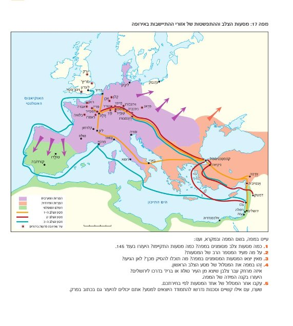

"בעוד פייר וחבריו יוצאים מצרפת מלאי התלהבות דתית, מזרחה לשחרר את ירושלים — בדרכם הם עוברים ממש באשכנז, שם חיות הקהילות היהודיות המשגשגות."
תחנה 1 — נתיב הדמים בלב אירופה
עיון במפה היסטורית
✦ תחנה 1 מתוך 4
נתיב הדמים בלב אירופה
📜 סיפור המסגרת
בעוד פייר וחבריו יוצאים מצרפת מלאי התלהבות דתית, הם צועדים מזרחה לשחרר את ירושלים ואת הקבר הקדוש. בדרכם הם עוברים ממש באשכנז, שם חיות הקהילות היהודיות המשגשגות. המפגש הזה, עוד לפני היציאה מהיבשת, עומד לשנות את פני ההיסטוריה היהודית.
🗺 משימת התבוננות — מפה 17
לחצו על המפה להגדלה:

1. זיהוי המסע: איזה מסע צלב (1, 2 או 3) עובר דרך רצף הקהילות היהודיות באשכנז? באיזו עיר מתחיל ובאיזו מסתיים?
2. זיהוי הקהילות: רשמו לפחות 4 שמות ערים של קהילות יהודיות לאורך המסלול:
3. דמיינו את המפגש: הצלבנים פוגשים יהודים בערים שלהם. שערו: מה לדעתכם קרה?
💡 במסכים קטנים המפה תופיע מעל השאלות
תחנה 1 / 4
תחנה 2 — מפצחים את הקוד
מהן גזרות תתנ"ו?
✦ תחנה 2 מתוך 4
מפצחים את הקוד — גזרות תתנ"ו
📖 חלק א' — משימת שפה: מהי "גזרה"?
מהי המשמעות של המילה "גזרה" לפי הבנתכם? בחרו:
א. האם אתם מכירים "גזרות" אחרות מההיסטוריה היהודית או מחגי ישראל?
ב. לפי תשובתכם, שערו — האם האירוע שנלמד יהיה טוב או רע ליהודי אשכנז? הסבירו.
🔢 חלק ב' — חידת הגימטרייה: מה הם תתנ"ו?
השם "תתנ"ו" הוא השנה שבה התרחשו הפרעות לפי הלוח העברי. הפכו את האותיות למספרים:
אות
ערך
ת
ת
נ
ו
סך הכל
לפי הלוח העברי — באיזו שנה מדובר?
מה השנה המקבילה בלוח הלועזי?
מה ההפרש בין שני הלוחות?
💭 חלק ג' — Inquiry: "גזרות" ולא "קרבות"?
שאלה למחשבה
הצלבנים ראו במסע שלהם "שליחות קדושה". מדוע לדעתכם בחרו היהודים לקרוא לאירועים האלו דווקא בשם "גזרות" ולא בשם "קרבות" או "מלחמה"?
חשבו: מה ההבדל בין "גזרה" ל"קרב"? מה הגזרה אומרת על תפיסת עולמם של היהודים?
תחנה 2 / 4
תחנה 3 — האויב שבפנים
המניעים לפגיעה
✦ תחנה 3 מתוך 4
האויב שבפנים — מדוע פגעו ביהודים?
🔍 שלב א' — ההשערה
הצלבנים יצאו להילחם במוסלמים בירושלים. בדרך, הם פוגשים קהילות יהודיות בערים שחצו. שערו: מה יכול היה לגרום לצלבנים לעצור ולתקוף דווקא את היהודים?
📜 שלב ב' — ניתוח תעודה היסטורית
פתחו עמ' 161 — דברי אב המנזר פטרוס ונרביליס משנת 1146. קראו ואחרי כן ענו:
1. "האם צדקתי?" — בדקו את השערתכם מול התעודה:
המניע שהשערתי
מופיע בתעודה?
הוכחה מהטקסט
2. פיצוח "ההגיון הצלבני":
א. מדוע טוען פטרוס שאין טעם לנסוע "עד קצווי תבל"?
ב. את מי פטרוס מחשיב כ"אויב גרוע יותר" — המוסלמים או היהודים? מדוע?
3. אתגר הבלש: מה לא שיערנו? האם מופיע בטקסט מניע דתי שלא חשבתם עליו?
תחנה 3 / 4
תחנה 4 — בין הגנה לבגידה
גורלן של קהילות שו"ם
✦ תחנה 4 מתוך 4
בין הגנה לבגידה — קהילות שו"ם
📜 סיפור המסגרת
השמועות על הצבא הצלבני המתקרב הגיעו לקהילות היהודיות הרבה לפני החיילים עצמם. היהודים פנו בבקשת עזרה למי שהיו אמורים להגן עליהם: הקיסר והבישופים. פייר וחבריו הגיעו לשערי הערים, והיהודים מצאו את עצמם בלב מאבק בין השלטון לבין ההמון הצלבני.
🎯 חלק א' — מיון: מי ניסה להגן ומי תקף?
גררו כל גורם לעמודה המתאימה לפי השערתכם:
הקיסר היינריך הרביעי
הבישופים המקומיים
תושבי הערים הנוצרים
הצלבנים
🛡 הגנה על היהודים
⚔ פגיעה ביהודים
הסבירו מדוע בחרתם כך:
📖 ב. קראו עמ' 161-162 ("קהילות יהודיות נחרבות") — האם צדקתם? הסבירו:
🔍 חקירת אירועים: מה קרה בכל קהילה?
מצאו בעמ' 161-162 שמות ארבע קהילות יהודיות וכתבו מה קרה בכל אחת:
שם הקהילה
מה קרה שם?
💭 Inquiry — הדילמה הבלתי אפשרית
דמיינו שאתם תושבי מגנצא בשנת 1096. שערי העיר נפרצו. יש לכם שלוש אפשרויות: למות על קידוש השם, להתנצר, או להילחם. במה תבחרו? נמקו.
תחנה 4 / 4
תחנה 4 — הדילמה של אלעזר
צומת ההחלטה
✦ תחנה 4 — המשך
הדילמה של אלעזר — צומת ההחלטה
📖 מגנצא, 1096
אלעזר, תלמיד חכם ובעל משפחה, עומד בחצר ביתו במגנצא. מחוץ לחומות נשמעות צעקות הצלבנים. מארי אשתו ובנותיו מביטות בו בחרדה. הברירה ברורה: להתנצר או למות.
עברו את כל שלוש הדרכים כדי להבין את ההיסטוריה המלאה:
⚔ קרב
✝ התנצרות
✡ קידוש השם
⚔
דרך א'
"לא ניכנע ללא קרב" הבחירה להילחם
✝
דרך ב'
"להציל את המשפחה" הבחירה להתנצר
✡
דרך ג'
"מות קדושים" קידוש השם
⚔ דרך א' — אלעזר בקו ההגנה
אלעזר מחליט שהגנה היא הדרך היחידה. הוא מנשק את אשתו וילדיו ורץ אל ארמון הבישוף, שם התרכזו יהודי הקהילה. "השערים נפרצו!" — הוא מצטרף ונלחם עד שהוכרע.
מדוע בחרו יהודי ירושלים להילחם לצד המוסלמים נגד הצלבנים?
✝ דרך ב' — אלעזר ונתיב האנוסים
אלעזר מביט בילדיו הקטנים. "אני לא יכול לעשות להם את זה." כשהצלבנים פורצים, הוא מרכין ראשו: "אני מסכים!" הוא ומשפחתו מובלים לכנסייה — נוצרים כלפי חוץ, יהודים בלב.
📚 פתחו עמ' 163: "יהודים רבים מתנצרים" — התאימו מושגים:
אנוסים:
משומדים:
האם אלעזר יוכל לשוב להיות יהודי? (התייחסו לצו 1104, עמדת הכנסייה, קלמנס 1267, האינקוויזיציה):
כיצד קבעו חכמי אשכנז להתייחס ליהודים שחזרו לאחר שהתנצרו בכפייה?
✡ דרך ג' — מות קדושים
ההמון כבר בפתח. אלעזר אוסף את משפחתו, עוצמים עיניים וזועקים: "שמע ישראל ה' אלוהינו ה' אחד." הם בוחרים למות כיהודים חופשיים.
📚 פתחו עמ' 162: "יהודים בוחרים למות על קידוש השם"
1. היקף האסון:
בוורמס:
במגנצא:
2. חקירת המושג "קידוש השם" (עמ' 162-163):
א. מהי המטרה? מדוע בחרו למות?
ב. האם "קידוש השם" הוא מושג חדש ממסעי הצלב?
ג. האם מדובר במאבק בין דתות? האם מותר ליהודי להחליט למות?
💭 שאלת סיום — מסר לדורות
עברתם את כל שלוש הדרכים. איזה מסר, לדעתכם, רצו מחברי הקינות להעביר לדורות הבאים דרך סיפורו של אלעזר?